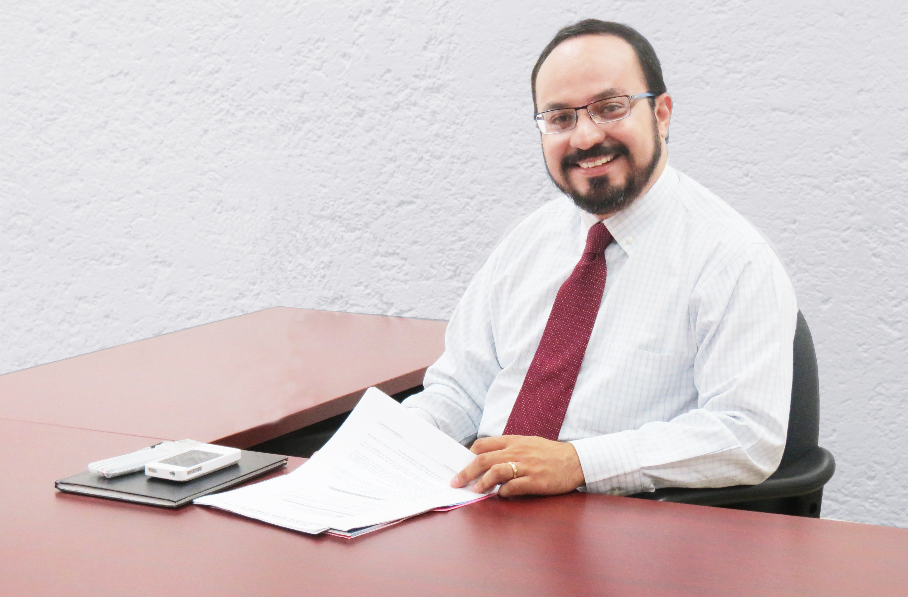

Mensaje del Director General de CORTV
“Portal Electrónico de la Corporación Oaxaqueña de Radio y Televisión”
Lic. Emilio de Leo Blanco
Director General de la
Corporación Oaxaqueña de Radio y televisión

Con gran entusiasmo, te doy la más cordial bienvenida al Portal Electrónico de la Corporación Oaxaqueña de Radio y Televisión, en esta nueva etapa, quienes aquí colaboramos, nos hemos enfocado en construir un cambio sustancial para modernizar la administración de la Corporación, ampliar la interacción con la sociedad, partiendo de una nueva relación con los colaboradores. Por ello, en una acción congruente, estamos elaborando el Plan General de Trabajo de la Corporación Oaxaqueña de Radio y Televisión, que comprenderá tres ejes estratégicos que guiaran la operación de la Corporación Oaxaqueña de Radio y Televisión:
- Ciudadanización
- Digitalización
- Cobertura y Diversificación de contenidos
Nuestro Portal Electrónico de la CORTV, se caracteriza por su nuevo diseño, que facilita el acceso a la información que generan todas las áreas.Considero que con tu participación, este Portal Electrónico llegará a ser un medio de comunicación efectivo en el que recibiremos tus comentarios y sugerencias. Por ello te invito a hacer uso de la sección “Tu Opinión Cuenta” en el que podrás hacernos llegar tus sugerencias y comentarios, mediante el uso de: correo electrónico, twiter, facebook, buzón de mensajes escritos y de voz.
Con estas acciones la CORTV cumple y hace efectivo el derecho de los ciudadanos de ser informados, con Imparcialidad, Honestidad, y Transparencia, asegurando de esta forma mayor objetividad y legitimización del actuar de los servidores públicos y directivos de esta corporación; tal y como lo establecen los artículos 6º y 7º de la Constitución Política de los Estados Unidos Mexicanos, los artículos 3º, 5º , 6º de la Constitución Política del Estado Libre y Soberano de Oaxaca, la Ley Federal de Transparencia y Acceso a la Información Pública Gubernamental, la Ley de Transparencia y Acceso a la Información Pública para el estado e Oaxaca, y El Plan Estatal de Desarrollo de Oaxaca 2011-2016.
Me despido, no sin antes ponerme a tus órdenes en las oficinas de la Corporación Oaxaqueña e Radio y televisión, ubicadas en Calzada Madero S/N, esquina Av. Tecnológico Centro Cultural Oaxaca, Colonia Ex Marquezado, Oaxaca de Juárez, Oaxaca.